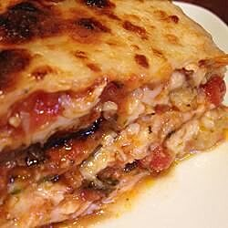

Lasagna

Description
This is a yummy and easy Jewish eggplant lasagna! Preparation can be done ahead of time, refrigerated and baked later in the day. Various colored peppers can be used to make the dish more attractive.
Great for those special Thankgiving or Christmas dinners!
Ingredients
- 2 tbps salt
- 2 pounds eggplant, peeled and sliced
- 1 egg
- 1/2 cup water
- 1 cup matzo meal
- 1 tbsp olive oil
- 1 large onion, chopped
- 1 red bell pepper, chopped
- 1 cup sliced mushrooms(optional)
- 3 tbsp olive oil
- 1 (26oz) jar tomato basil pasta sauce
- 1 (8oz) package mozzarella cheese, sliced
Steps
- Sprinkle salt over eggplant slices. Place in a colander or large bowl for 30 minutes and allow eggplant to release extra liquid.
- Preheat the oven to 350 degrees F (175 degrees C).
- Rinse eggplant slices with cold water and lightly press dry with paper towels or a clean dish towel.
- Whisk egg and water in a bowl.
- Measure matzo meal into a separate shallow bowl.
- Dip eggplant slices into egg mixture and then press both sides into matzo meal. Set aside breaded eggplant; do not stack.
- Heat 1 tablespoon olive oil in a frying pan over medium heat; cook and stir onion, red bell pepper, and mushrooms in hot oil until lightly browned, 6 to 8 minutes. Remove and set aside.
- Heat 3 tablespoons of olive oil in the same frying pan over medium heat.
- Place a layer of eggplant slices in the pan and cook until lightly browned, about 3 minutes. Flip and cook other side until browned, about 3 minutes, adding more olive oil as needed.
- Spread 1/2 cup of tomato basil sauce in bottom of a 9x13 baking dish.
- Place a layer of cooked eggplant on top of pasta sauce.
- Cover eggplant layer with half of mushroom mixture.
- Layer the remaining eggplant slices on top of mushroom mixture, followed by remaining half of mushroom mixture.
- Pour pasta sauce over all the layers.
- Top casserole with sliced mozzarella cheese.
- Cover dish with aluminum foil.
- Bake in preheated oven until sauce is bubbling, about 45 minutes.
- Remove from oven and remove aluminum foil. Return to oven until mozzarella cheese is lightly browned, about 5 minutes.
- Cool for 15 minutes to allow the lasagna to set up.
Back to Main